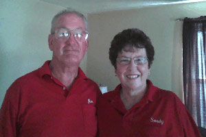
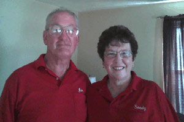
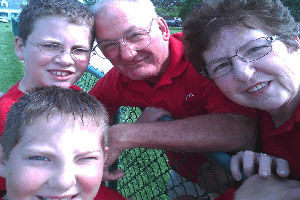

We, Jim and Sandy best have been in the carriage business for 16 years. We started it when Jim’s dad, another Jim Best, moved to Tennessee and asked us if we wanted to buy and old Vis-a-Vis, a 2 seated European carriage also known as a “Cinderella Carriage” that is very popular for weddings. That’s how we got started.
We, Jim and Sandy best have been in the carriage business for 16 years. We started it when Jim’s dad, another Jim Best, moved to Tennessee and asked us if we wanted to buy and old Vis-a-Vis, a 2 seated European carriage also known as a “Cinderella Carriage” that is very popular for weddings. That’s how we got started.
We bought our first registered Haflinger horse about 22 years ago when they were 6 months old. Jim trained them to show. They were shown professionally at many county fairs and other horse shows, at one time we went to 9 horse shows in one summer and they were right up there at the top in competition. We got so busy once we started the business we stopped showing them because show horses and carriage horses are totally different. Show horses have to be “heads up” and “raring to go” where “carriage horses” have to be “calm and a little slower”, not that our guys can’t trot when you want them too. They listen to the commands from their driver, Jim, and do what he asks. They are so use to people now and love attention. They are rather “over loved” and as some may say “over fed”! Although we’ve had many horses through the years, we now have 4 wonderfully trained horses; Stumper, the oldest at 18 years of age, Star, Storm and Mike-all 16 years of age.
Our business is a family owned business we like to call a “mom and pop” business. All three of our adult children and their families help us out if we need their help.
Jim and I love meeting new people and watching the joy and excitement on their faces when they get their look at the horses and carriage or wagon. We now have what is called a “people carrier”. It has padded bench seats and holds up to 12-15 people. It is good when you have a large group of people who want to ride. It is decorated according to event. We sold our first carriage and purchased our current one which has a convertible top that can be put up or down within a few minutes. It also has 9 separate panels so it can be closed in either partially or completely. The carriage holds up from 4-6 people. It, like the people carrier, is also decorated to the event. We hope to see you in the future so that you can make memories like all of our previous customers. Thank you for visitng our site and please feel free to contact us for more information regarding prices etc.